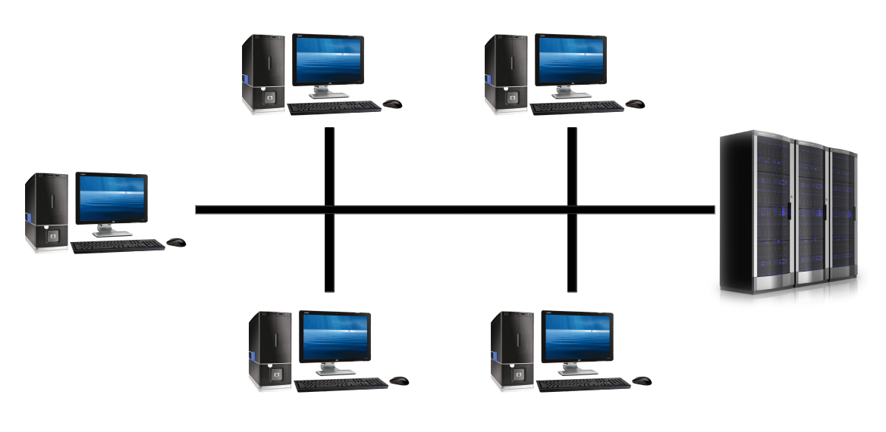
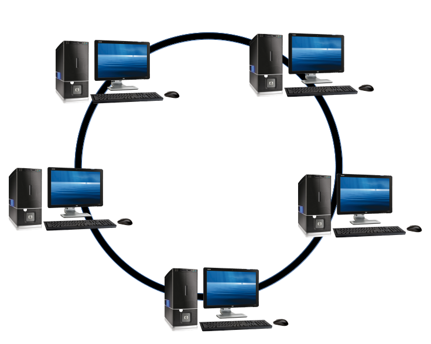
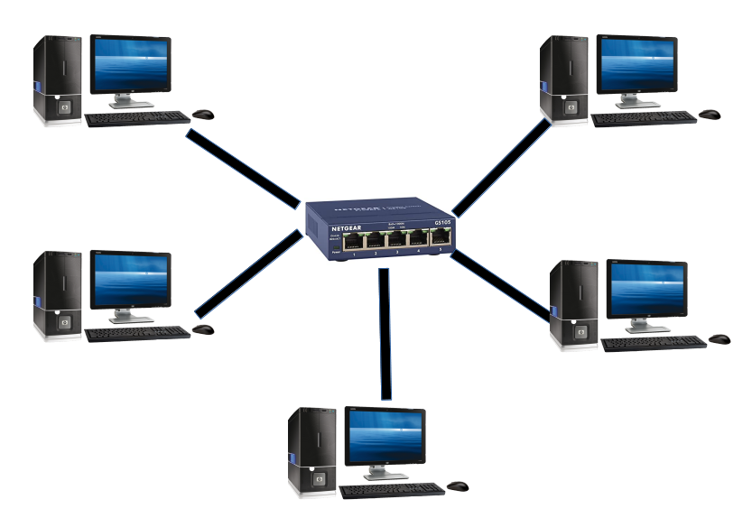
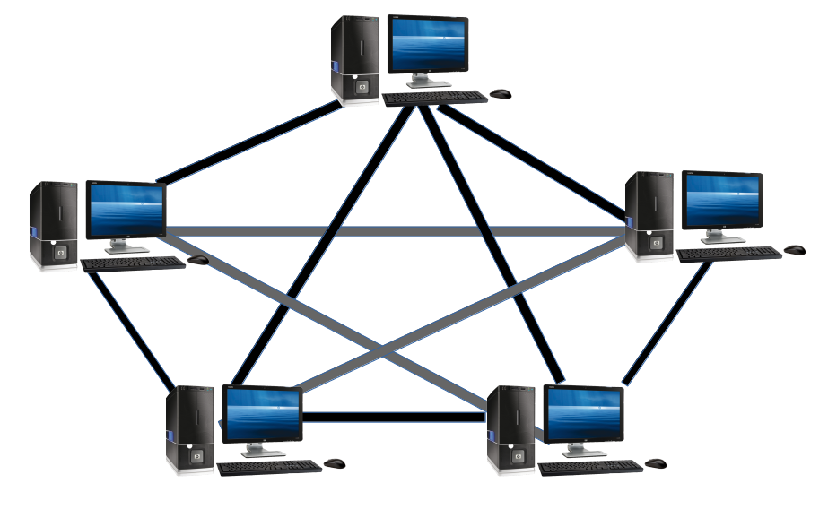
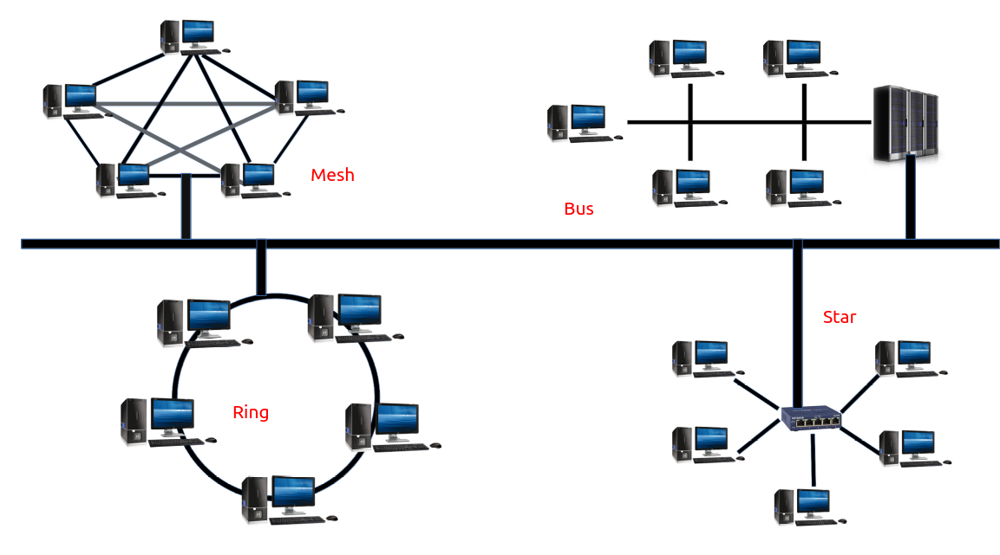

Welcome to the first part of Networking for n00bs. This article is for the people who are trying to search for a kick start in the field of networking.
After reading this article you will be able to understand:
What network is?
Types of Network
Network Models
Network or Networking
Have you heard people saying we should create networks in the corporate world? I am sure you did. You contact people, do some exchange of information, say your name , interest etc and afterwards exchange some data if needed and this is what we call a human network. In a similar way when electronic devices communicate with each other and exchange data we call it that "Devices are networking".
If we go by Wikipedia definition of computer network then:
A computer network is a group of computers that use a set of common communication protocols over digital interconnections for the purpose of sharing resources located on or provided by the network nodes.Too many jargons( trait specific words ) no worries let me simplify it for you. Let say you just saw a girl and wanna connect with her so you first approach her and start talking now during this talk you should take care of some manners(protocols) to talk with her politely and maintain a proper distance ( xD Who knows she is Corona +ve ) and with these protocols in mind you successfully shared her you mobile number or took her number(if you are lucky). This is what happens to computers which are in the same network. We will talk more on the technical parts in the coming blogs so don't worry.
Types of Network
So before we start this section I have a request to you :in this section we have used the name of some devices like hub switches, routers which help for networking purposes. In case you don't know about them then we'll be soon releasing a blog on this topic too.
So let's move on to a bigger picture. Now we know the concept of networking and are ready to explore further. So a network of devices(mobile, laptops , computer etc) can be of various shapes and can communicate from different parts of the world and based on these connection networks are divided into types.
Types of network:
Personal Area Network(PAN): Let's say you are at your home and your smart wrist watch or your Smart TV connected with your mobile hotspot then that is what PAN. It mostly includes one or more computers, video games consoles or other personal entertainment devices.
Local Area Network(LAN): Let's say you visit your company and then connect your laptop with the Access Point(Basically hotspot/Ethernet connection provided by company) now that connection where all the employees are on the same network can be termed as LAN. This network can be helpful for sharing/accessing information to/by all the connected devices without exposing it to some outsider.
Metropolitan Area Network(MAN): So assume you are still in your company connected with an access point but now you want to access a resource which is present at a branch office situated at the opposite corner of the city. So the type of network we need here is MAN. Other examples can be of network present between different departments of college campus
Wide Area Network(WAN): Now this is something pretty big let's say you hosted a website so anyone can access it right? But what actually happens is that a user in INDIA will request a server i.e. communicate with a server kept in say America. So this type of network is called WAN.The Internet is the best example for this.
Let me give you an example if you are still in doubt. Assume OIJ a new company became an ISP(Internet service provider same as Airtel, JIO etc) so now it will provide a PAN and now your University took a internet connection from OIJ and provided access points to it's students and labs now these access points will work as LAN and now you connect with one of the access points via ethernet/WIFI and started a hotspot and connect your smartwatch to this newly created hotspot so your hotspot now working as PAN. Interesting right? If you didn't understand no worries with time you will. Just start looking around you and identify different network types.
Network models or topologies
Now suppose you are assigned a task to connect 5 computers so how you gonna do that let's learn.
- Bus topology

Here each computer is connected to each other in a sequential order and execution takes place on the basis of token.When a system finishes it's process token is released for other devices to be used. Due to its circular shape it's called ring
Advantage- Easy to implement
- Cost is less as single wire is used.
Disadvantage- Collision occurs in case of high usage.
- Connectivity is highly dependent on central thick wire only.
- Ring topology

Here each computer is connected to each other in a sequestial order and execution takes place on the basis of token.When a system finishes it's process token is released for other device to be used. Due to it's circular shape it's called ring topology.
Advantage- Chances of collision is lesser
- Adequate usage of connecting wire
Disadvantage- Malfunction of any device can create problem.
- Troubleshooting is difficult
- Star topology

A central device(mostly hub) is used to connect all the devices together.
Advantage- Easy to implement
- Each device requires a single slot on the central device(Hub) for connection.
Disadvantage- Connectivity depends on proper functioning of the central device (Hub).
- Installation cost is high.
- Mesh topology

In this topology each device has a direct access to each of the devices in the network therefore connectivity is highest.
Advantage- High Connectivity
- Good security and privacy
Disadvantage- Cost inefficient
- Implementation is not easy
- Hybrid topology

So this is what we generally implement in real life a combination of all the above topologies. A hybrid topology is made up of different designs implemented all at once.
Advantage- Practically feasible
- Cost effective.
Disadvantage- Can be confusing.
- Sometimes wireframing takes time.
So pretty much knowledge for today. We keep this series going. For any feedback or suggestion reach out our team page till then stay tuned for more.